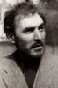

Also known as:Amanti d'oltretomba (original title)
Country:Italy, 105 minutes
Spoken languages:Italian
Genres:Horror
Director(s):Mario Caiano
Writer(s):Mario Caiano, Fabio De Agostini
Video Codec:Unknown
Number: 105


Certification:NR
Storyline:
A sadistic count tortures and murders his unfaithful wife and her lover, then removes their hearts from their bodies. Years later, the count remarries and the new wife experiences nightmares and hauntings. The ghosts of the slain return to exact their bloody revenge, until their hearts are destroyed.
Cast: 


Medium: Original DVD,
Comments: Part of: 100 Greatest Horror Classics
Loaned: No
Aspect ratio: Unknown